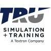
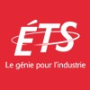
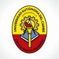
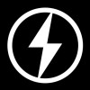
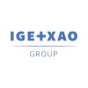
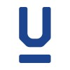

Luis Ruiz, B.Eng.
Montreal, QC
luisruizs@gmail.com
linkedin.com/in/luisruizs
Summary
Bilingual Engineering Professional leveraging more than 13 years’ experience designing electrical systems in the aerospace industry. A creative problem-solver with an innovative mind, bringing forward expertise in analyzing complex engineering problems and recommending appropriate solutions. Driven, diligent and meticulous, with a track record of completing all projects as per standards, on time and within budget. Collaborative, helpful and resourceful with demonstrated ability to thrive within dynamic and changing environments.
Experience
- 
Electric Vehicle Designer
Lion Electric
Aug 2021 – Present (5 mos) - 
Harness Engineer
BOMBARDIER
Mar 2019 – Jun 2021 (2 yrs 4 mos)
Part of the Global 7500 EWIS Interiors Harness engineering team, within Aerostructure and Engineering Services. • Developed wire harness drawings for internal or external use in fabricating cables. • Developed production documentation including drawings, BOMs, and assembly documents. • Completed '2D/3D synchronization' through wire list import. • Performed 2D-to-3D comparison prior to harness assembly print release.
Configuration Engineer
BOMBARDIER
Nov 2018 – Mar 2019 (5 mos)
Part of the Global 7500 EWIS Interiors Harness engineering team, within Aerostructure and Engineering Services. • Prepared documents for governance and Integrated Working Team (IWT) meetings. • Created tools to track deliverables, monitored projects and flagged issues using appropriate tools. • Tracked deliverables in accordance with plans and requirements approved by project management. • Presented EWIS issues to system group for solving problems. • Ensured the effective monitoring of supplier performance (KPI).
Electrical Team Lead
BOMBARDIER
Oct 2017 – Nov 2018 (1 yr 2 mos)
Part of the Global 7000 EWIS Interiors Harness engineering team, within Aerostructure and Engineering Services. • Reviewed and approved Datasets in part or in whole. Recommended and approved design changes. • Engaged interior system stakeholders, met expectations and supported supervisor in managing conflicting requests. Communicated lessons learned to other community members. • Provided technical leadership, coaching, mentoring and training to staff. • Identified and managed technical risks and opportunities.
Electrical Designer
TRU Simulation + Training
Sep 2008 – Oct 2017 (9 yrs 2 mos)
Part of the Electrical Engineering team. • Ensured that technical work, electrical schematics and cabling conformed to project requirements. • Created electrical schematics and wiring diagrams for complete product and related sub-systems as per respective industry norms and standards (CSA, ISO). • Provided technical support to Production, respected deadlines and tracked engineering projects. • Researched and sourced components for replacement with new technology to satisfy project requirements. • Reviewed and approved other designers’ work. Designed complex electrical schematics.
Electrical Assembler
Mechtronix Inc.
Aug 2006 – Sep 2008 (2 yrs 2 mos)
Part of the production team. • Read and interpreted drawings, diagrams, specifications, work orders, or reports. • Performed manual assembly during small-scale production of electrical panels used in simulation systems. • Assembled wire panels as per Engineering specifications ensuring quality and reliability. • Conducted functional and continuity tests of electrical assemblies, components, wire harness, and plugs, using ohmmeter, test lights, and other electrical testing instruments.- 
Assistant Professor
Universidad Autónoma del Caribe
Feb 2002 – Dec 2005 (3 yrs 11 mos)
Part of the Department of Electrical and Electronic Engineering. • Supported students with communication projects such as data transmission over TCP/IP. • Guided students in digital signal processing projects including digital filters and data acquisition. • Designed data acquisition systems (hardware and software).
Education

Universidad del Norte
Bachelor's degree, Electrical and Electronics Engineering
1996 – 2001
Meyer Institute
English course, Languages
1996
Licenses & certifications
- 
Aiguiser son leadership authentique : avoir du tact tout en étant audacieux! - École de technologie supérieure
Issued Mar 2015
Attestation de français - Office québécois de la langue française
Issued Feb 2014- 
SEE ELECTRICAL EXPERT HARNESS DESIGN USER - IGE+XAO
Issued Aug 2013
Évaluation comparative des études effectuées hors du Québec - Ministère de l’Immigration et des Communautés culturelles
Issued Jun 2007
Credential ID Études universitaire premier cycle
Network Interconnection - Universidad Autónoma del Caribe
Issued Aug 2005
Business administration - AulaFacil.com
Issued Feb 2017
Creativity and personal development - AulaFacil.com
Issued Jan 2017
Multiple Intelligences - AulaFacil.com
Issued Mar 2017
LFS211: Linux Networking and Administration - The Linux Foundation
Issued Nov 2020
LFS258: Kubernetes Fundamentals - The Linux Foundation
Issued Mar 2021
Credential ID LF-wgih3yvz6t
Certified Kubernetes Administrator (CKA) with Practice Tests - Udemy
Issued Jun 2021- 
Kotlin - Edutin Academy
Issued Mar 2021 
C Essential Training - LinkedIn
Issued Jul 2021
Go Essential Training - LinkedIn
Issued Jul 2021
Learning Ansible - LinkedIn
Issued Jul 2021
Learning Jenkins - LinkedIn
Issued Jul 2021
Learning Nagios - LinkedIn
Issued Jul 2021
Learning AWS CloudFormation - LinkedIn
Issued Jul 2021
Project Leadership - LinkedIn
Issued Jul 2021
Managing Innovation - LinkedIn
Issued Jul 2021
Coaching Skills for Leaders and Managers - LinkedIn
Issued Jul 2021
CKA: Certified Kubernetes Administrator - The Linux Foundation
Issued Jul 2021 – Expires Jul 2024
Product Management: Building a Product Strategy - LinkedIn
Issued Jul 2021
Learning Bash Scripting - LinkedIn
Issued Aug 2021
Agile Project Leadership - LinkedIn
Issued Aug 2021
Excel: Macros in Depth (365/2019) - LinkedIn
Issued Aug 2021
Learning VBA in Excel - LinkedIn
Issued Aug 2021
Learning SOLIDWORKS Electrical - LinkedIn
Issued Aug 2021
Excel: Power Query for Beginners - LinkedIn
Issued Aug 2021
Learning CATIA v5 - LinkedIn
Issued Sep 2021
Developing Your Emotional Intelligence - LinkedIn
Issued Sep 2021
Learning Python - LinkedIn
Issued Sep 2021
Learning Git and GitHub - LinkedIn
Issued Sep 2021
Learning Java - LinkedIn
Issued Sep 2021
LFCS: Linux Foundation Certified Systems Administrator - The Linux Foundation
Issued Nov 2021 – Expires Nov 2024
CKAD: Certified Kubernetes Application Developer - The Linux Foundation
Issued Dec 2021 – Expires Dec 2024
Skills
Electrical Design Kubernetes Linux Aerospace Engineering Kotlin Altium SEE ELECTRICAL C (Programming Language) Go (Programming Language)